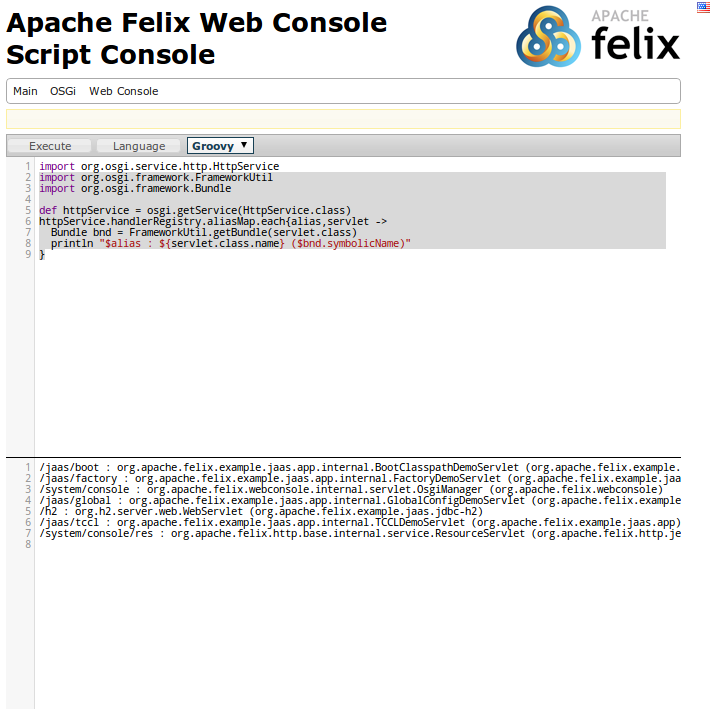

Apache Felix Script Console Plugin
Script Console is a Felix web console plugin which allows evaluation of scripts within the OSGi container. It provides following features
- Support evaluation of script in any e.g. Groovy, JavaScript, Ruby etc. You would need to ensure that relevant language bundle is deployed
- Code editor with syntax highlighting support based on CodeMirror Javascript library
- Hot key support
- Execute remote testcase via evaluating test scripts
Installation
To make use of this plugin you need to
A - Install the Script Console Plugin bundle
Refer to downloads for getting the bundle.
For Maven use following coordinates
<dependency> <groupId>org.apache.felix</groupId> <artifactId>org.apache.felix.webconsole.plugins.scriptconsole</artifactId> <version>1.0.0</version> </dependency>
For latest build follow steps below
$svn co https://svn.apache.org/repos/asf/felix/trunk/webconsole-plugins/script-console/ $cd script-console $mvn clean install $mvn org.apache.sling:maven-sling-plugin:2.1.0:install -Dsling.url=http://localhost:8080/system/console
B- Install the language specific bundle
Install bundles for the Script Language you want to use
Usage
After installing it you would see a new tab "Script Console" in Felix Web Console. The plugin screen provides a textarea to author script code. One can select the language via the given dropdown. The generated output is shown in pane below.
The script exposes following variables
request- Current HttpServletRequest instanceresponse- Current HttpServletResponse instancereader- Direct access to the Reader of the request - same as request.getReader(). Use it for reading the data of an HTTP request body.out- Direct access to the PrintWriter of the response - same as response.getWriter(). Use it for writing to the HTTP response body.osgi- Provides convenience methods for scripts, mainly osgi.getService(foo.bar.Service.class) to retrieve OSGi services available in OSGi Container (Class notation depending on scripting language).bundleContext- OSGi BundleContext instance for the script console plugin bundle. Can be used to access the OSGi runtime
So simplest script that can work is
out.println ("Hello world!!");
To access a service use osgi.getService
def httpService = osgi.getService(org.osgi.service.http.HttpService.class)
To access a service satisfying OSGi filter
def eventPlugin = osgi.getServices(javax.servlet.Servlet.class,'(felix.webconsole.label=events)')[0]
Following hotkeys work
- Ctrl+F9 - Execute the script
- Ctrl+q - Clear the output
HTTP API
The plugin can also be invoked by making POST request. It supports following parameters
code- Script content. Can be norm form data or a multi part contentlang- Language extension.- Groovy - groovy
- JavaScript - esp
If any exception occurs while evaluating the script then it would return the exception message with status set to 500. Scripts can control what output they want to emit.
Sample Scripts
Following are some sample scripts in Groovy. Note the scripts might be depending on implementation details to access the relevant data structures
-
Script to find out servlets which are registered problematically with Felix HTTP Service
import org.osgi.service.http.HttpService import org.osgi.framework.FrameworkUtil import org.osgi.framework.Bundle def httpService = osgi.getService(HttpService.class) httpService.handlerRegistry.aliasMap.each{alias,servlet -> Bundle bnd = FrameworkUtil.getBundle(servlet.class) println "$alias : ${servlet.class.name} ($bnd.symbolicName)" }
-
Script to load a class which is not exported and then invoke some static method on that class. At times you need to access some private class to see the runtime state.
import org.osgi.framework.Bundle import org.osgi.framework.BundleContext //Script to load a class which is not exported and then invoke some static method on that class //Name of the class def className = "org.apache.sling.engine.impl.SlingMainServlet" def resPath = className.replaceAll('.','/')+".class" def bundles = bundleContext.getBundles().findAll{Bundle b -> b.getEntry(resPath) != null } if(!bundles){ println "No bundle found for class $className" return } def b = bundles.asList().first() def clazz = b.loadClass(className) //Invoke some static method def result = clazz.metaClass.invokeStaticMethod(clazz, 'foo', arg1) println result
-
Script to find out which bundle embeds a given class
import org.osgi.framework.Bundle import org.osgi.framework.BundleContext //Name of the class def className = "org.apache.sling.engine.impl.SlingMainServlet" def resPath = className.replaceAll('.','/')+".class" def bundles = bundleContext.getBundles().findAll{Bundle b -> b.getEntry(resPath) != null } println "Following bundles have the class" bundles.each{ println it }
Screenshots
